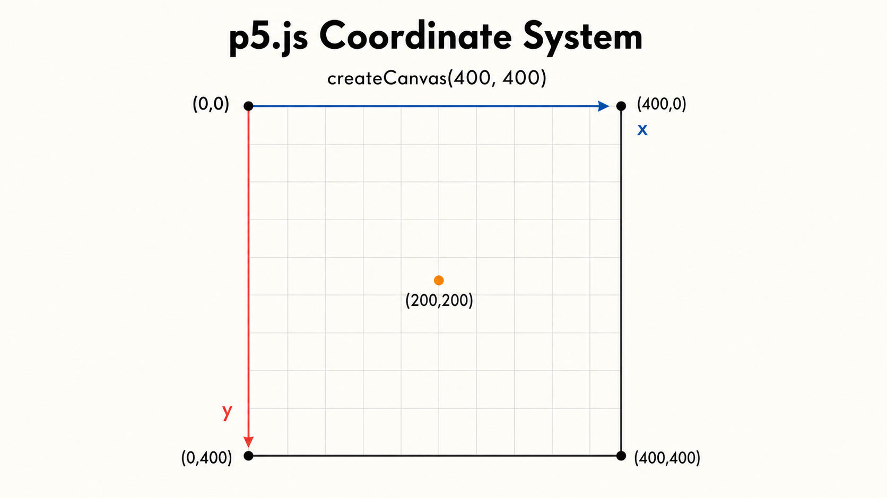
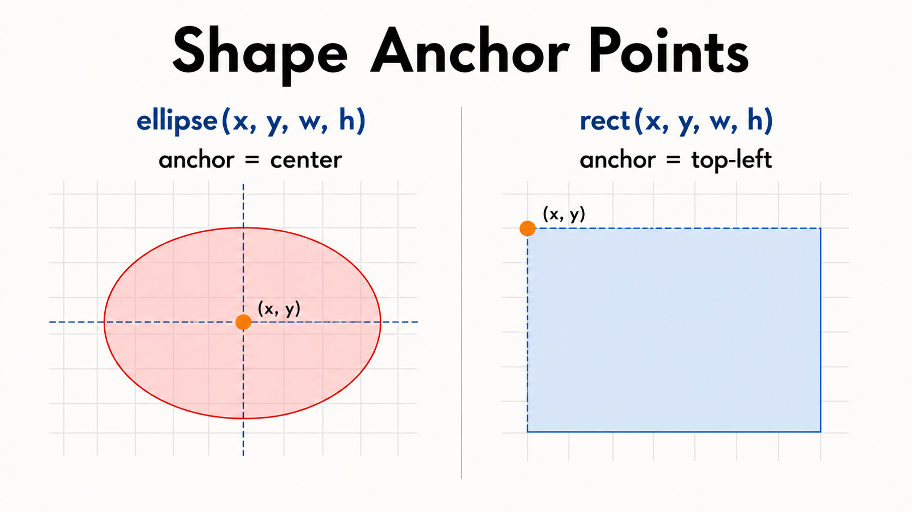
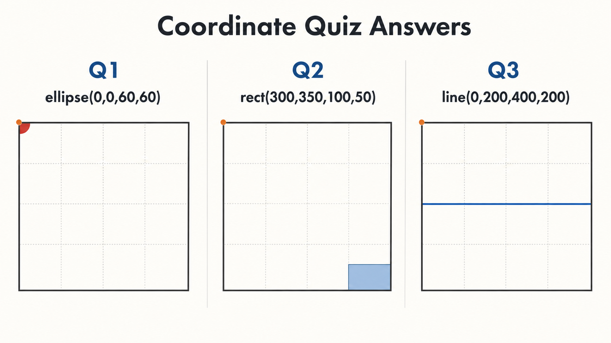

2주차 1교시 — 좌표계와 변수의 이해
강의 아웃라인: week-02-outline 다음 교시: week-02-period2-student (시스템 변수와 인터랙션 첫걸음)
| 항목 | 내용 |
|---|---|
| 대상 | P5.js 입문자 (테크아트 전공) |
| 소요 시간 | 45분 |
| 핵심 도구 | P5.js Web Editor |
- ✅ P5.js 좌표계의 원리를 이해하고, 캔버스의 원하는 위치에 도형을 배치할 수 있습니다
- ✅
triangle()·stroke()계열 함수로 도형 표현을 확장할 수 있습니다 - ✅
let으로 변수를 선언·활용해, 한 곳만 바꿔도 전체가 바뀌는 유연한 코드를 작성할 수 있습니다
도입
1주차 빠른 복습
수강정정 등으로 이번 주부터 듣는 학생은 아래 내용을 먼저 확인하세요. - P5.js Web Editor: https://editor.p5js.org (코드를 저장하려면 회원가입이 필요합니다) - 1주차 학생 자료도 함께 열어두면 오늘 내용이 더 수월합니다
P5.js 핵심 구조 — setup()과
draw()
P5.js 코드는 두 덩어리로 나뉩니다.
function setup() {
createCanvas(400, 400); // 캔버스 만들기 (한 번만 실행)
}
function draw() {
background(220); // 매 프레임 반복 실행 (1초에 약 60번)
}| 함수 | 실행 시점 | 비유 |
|---|---|---|
setup() |
시작할 때 한 번 | 도화지 준비 |
draw() |
이후 계속 반복 | 계속 그리기 |
setup()에서 캔버스를 만들고, draw() 안에
그림 그리는 코드를 넣는 구조입니다.
1주차에 배운 기본 도형과 색상
| 함수 | 역할 | 예시 |
|---|---|---|
ellipse(x, y, w, h) |
원/타원 | ellipse(200, 200, 80, 80) |
rect(x, y, w, h) |
사각형 | rect(50, 50, 100, 60) |
line(x1, y1, x2, y2) |
선 | line(0, 0, 400, 400) |
fill(r, g, b) |
채우기 색 | fill(255, 0, 0) → 빨강 |
background(r, g, b) |
배경색 | background(220) → 회색 |
문제 제기 — 왜 변수가 필요할까?
1주차에 만든 얼굴 코드를 다시 봅니다.
function setup() {
createCanvas(400, 400);
}
function draw() {
background(255, 220, 180);
// 얼굴
fill(255, 230, 200);
ellipse(200, 200, 180, 200);
// 왼쪽 눈
fill(255);
ellipse(160, 180, 40, 40);
fill(0);
ellipse(160, 180, 20, 20);
// 오른쪽 눈
fill(255);
ellipse(240, 180, 40, 40);
fill(0);
ellipse(240, 180, 20, 20);
// 코
fill(255, 200, 170);
ellipse(200, 210, 15, 20);
// 입
fill(200, 100, 100);
ellipse(200, 245, 40, 15);
}ellipse(200, 200, 180, 200)의 숫자 4개가 정확히 무엇을
뜻하는지, 1주차에는 ’위치랑 크기’라고만 했습니다. 이번 시간에 이것을
정확하게 이해합니다.
이 얼굴을 화면 왼쪽으로 옮기고 싶다면, 코드에서 숫자를 몇 군데 바꿔야 할까요?
ellipse(200, 200, 180, 200); ← 200이 2개 (x, y 위치)
ellipse(160, 180, 40, 40); ← 160 = 200에서 40 뺀 것
ellipse(240, 180, 40, 40); ← 240 = 200에서 40 더한 것
ellipse(200, 210, 15, 20); ← 200 (x 위치)
ellipse(200, 245, 40, 15); ← 200 (x 위치)x 위치만 바꾸려 해도 최소 5곳을 수정해야 합니다. 하나라도 빠뜨리면 눈, 코, 입의 위치가 서로 어긋날 수 있습니다.
이번 시간이 끝나면 딱 한 곳만 바꿔서 얼굴 전체를 옮길 수 있게 됩니다.
💡 핵심 개념 1 — P5.js 좌표계
원점과 축 방향
수학에서 배운 좌표계와 P5.js 좌표계에는 중요한 차이가 있습니다.
수학 좌표계 P5.js 좌표계
y ↑ (0,0) ──────→ x
│ │
│ │
│ │
└──────→ x ↓ y
(0,0)P5.js에서는 원점 (0, 0)이 왼쪽 위에 있고, y가 아래로 증가합니다. 컴퓨터 화면이 텍스트를 왼쪽 위부터 읽는 것과 같은 이유입니다.

캔버스와 좌표의 관계
createCanvas(400, 400)으로 캔버스를 만들면 이런 좌표
공간이 생깁니다.
(0,0) ─────────────────────── (400,0)
│ │
│ │
│ (200,200) │
│ ● │
│ │
│ │
(0,400) ──────────────────── (400,400)- x: 왼쪽에서 오른쪽으로 0 → 400
- y: 위에서 아래로 0 → 400
ellipse(200, 200, 80, 80)→ 정확히 캔버스 한가운데에 원을 그림
도형별 좌표 기준점의 차이
도형마다 좌표가 가리키는 지점이 다릅니다.
| 도형 | 좌표 기준점 | 예시 |
|---|---|---|
ellipse(x, y, w, h) |
중심 | (200, 200)이면 원의 한가운데가 그 위치 |
rect(x, y, w, h) |
왼쪽 위 꼭짓점 | (200, 200)이면 사각형의 왼쪽 위가 그 위치 |
line(x1, y1, x2, y2) |
시작점과 끝점 | 두 점을 잇는 선 |
같은 (200, 200)을 줘도 원과 사각형의 위치가 다르게 보입니다.

function setup() {
createCanvas(400, 400);
}
function draw() {
background(220);
// 같은 (200, 200)이지만 위치가 다르게 보임
fill(255, 0, 0);
ellipse(200, 200, 100, 100); // 원: 중심이 (200,200)
fill(0, 0, 255);
rect(200, 200, 100, 100); // 사각형: 왼쪽 위가 (200,200)
}빨간 원은 중심이 (200, 200)이라 정중앙에 위치하고, 파란 사각형은 왼쪽 위 꼭짓점이 (200, 200)이라 원의 오른쪽 아래에 겹쳐서 그려집니다. 같은 좌표를 줬는데 위치가 다른 이유입니다.
y값이 커지면 도형이 위로 올라갈까요, 아래로 내려갈까요?
답: 아래로 내려갑니다. P5.js 좌표계에서는 y가 아래로 증가합니다.
💡 핵심 개념 2 — 좌표 미니 퀴즈
코드를 보고, 도형이 캔버스 어디에 그려질지 머릿속으로 상상해보세요.
Q1: ellipse(0, 0, 60, 60) — 어디에
그려질까요?
function setup() {
createCanvas(400, 400);
}
function draw() {
background(220);
fill(255, 0, 0);
ellipse(0, 0, 60, 60); // 왼쪽 위 모서리에 1/4만 보임
}원의 중심이 (0, 0) = 왼쪽 위 모서리에 놓이므로, 1/4만 보이고 나머지는 캔버스 밖으로 잘립니다. 캔버스 밖으로 나가도 에러는 나지 않습니다.
Q2: rect(300, 350, 100, 50) — 어디에
그려질까요?
function setup() {
createCanvas(400, 400);
}
function draw() {
background(220);
fill(0, 120, 255);
rect(300, 350, 100, 50); // 오른쪽 아래에 맞닿는 사각형
}rect()의 기준점은 왼쪽 위 꼭짓점입니다. (300, 350)에서
시작해 오른쪽 끝은 x=400, 아래쪽 끝은 y=400에 닿습니다.
Q3: line(0, 200, 400, 200) — 어떤 선이
그려질까요?
function setup() {
createCanvas(400, 400);
}
function draw() {
background(220);
line(0, 200, 400, 200); // 캔버스를 가로지르는 수평선
}y가 둘 다 200이므로 수평선입니다. 캔버스를 정확히 반으로 가르는 가로선이 됩니다.
line(200, 0, 200, 400)은 어떤 선이 될까요? 직접
실행해보세요.

💡 핵심 개념 3 — 도형 확장: triangle()과 stroke()
1주차에 ellipse, rect, line을
배웠습니다. 이번 시간에는 두 가지를 더 배웁니다.
삼각형: triangle()
삼각형은 꼭짓점이 3개이므로, 좌표를 6개 지정합니다.
function setup() {
createCanvas(400, 400);
}
function draw() {
background(220);
fill(255, 200, 0);
triangle(200, 50, 100, 250, 300, 250);
}triangle(x1, y1, x2, y2, x3, y3) — 순서대로 첫 번째, 두
번째, 세 번째 꼭짓점입니다.
(200, 50)
△
/ \
/ \
/ \
/ \
(100, 250)────(300, 250)꼭짓점 위치를 바꾸면 삼각형 모양이 자유롭게 바뀝니다. 뾰족한 삼각형, 납작한 삼각형, 뒤집힌 삼각형 모두 가능합니다.
테두리
스타일: stroke(), strokeWeight(),
noStroke(), noFill()
function setup() {
createCanvas(400, 400);
}
function draw() {
background(220);
// 기본 (검은 테두리 1px)
stroke(0); // 검은 테두리
strokeWeight(1); // 두께 1px
fill(255, 0, 0);
ellipse(100, 100, 80, 80);
// 테두리 색 변경
stroke(0, 0, 255); // 파란 테두리
strokeWeight(4); // 두께 4px
fill(255, 255, 0);
ellipse(250, 100, 80, 80);
// 테두리 없음
noStroke();
fill(0, 200, 100);
ellipse(100, 250, 80, 80);
// 채우기 없음 (테두리만)
stroke(255, 0, 0);
strokeWeight(2);
noFill();
ellipse(250, 250, 80, 80);
}| 함수 | 역할 |
|---|---|
stroke(r, g, b) |
테두리 색 지정 |
strokeWeight(n) |
테두리 두께 (픽셀 단위) |
noStroke() |
테두리 제거 |
noFill() |
채우기 제거 (테두리만 남음) |
fill()과 마찬가지로 stroke()도 한번 쓰면 그
아래 모든 도형에 적용됩니다. 바꾸고 싶으면 다음 도형
전에 다시 써줘야 합니다.
💡 핵심 개념 4 — 변수란? let 키워드
이번 시간의 핵심입니다. 도입부에서 본 ’얼굴을 옮기려면 5곳을 고쳐야 하는 문제’를 해결하는 것이 바로 변수입니다.
변수 = 값을 담는 이름 붙인 상자
┌─────────────┐
│ x = 200 │ ← "x라는 상자에 200을 넣어둔다"
└─────────────┘나중에 x라고 쓰면, 컴퓨터가 상자 안의 200을 꺼내
씁니다.
let 문법
let x = 200; // x라는 변수에 200을 넣음
let y = 200; // y라는 변수에 200을 넣음
let size = 80; // size라는 변수에 80을 넣음let은 “이 이름으로 변수를 만들겠다”라는 선언입니다=은 수학의 “같다”가 아니라 “이 값을 넣어라”라는 뜻입니다
왜 변수가 필요한가? — 비교해보기
변수 없이 원 3개를 그린 경우:
function setup() {
createCanvas(400, 400);
}
function draw() {
background(220);
ellipse(200, 200, 80, 80); // 큰 원
ellipse(200, 160, 30, 30); // 위쪽 작은 원
ellipse(200, 240, 30, 30); // 아래쪽 작은 원
}세 원을 오른쪽으로 100만큼 옮기려면 200을
300으로 3군데 다 바꿔야 합니다.
변수를 사용한 같은 코드:
let centerX = 200; // ⭐ 여기 한 곳만 바꾸면 됨!
function setup() {
createCanvas(400, 400);
}
function draw() {
background(220);
ellipse(centerX, 200, 80, 80);
ellipse(centerX, 160, 30, 30);
ellipse(centerX, 240, 30, 30);
}centerX = 200을 centerX = 300으로 바꾸면,
한 군데만 수정했는데 세 개가 다 같이 이동합니다. 같은
값이 여러 곳에 쓰이면 변수 하나로 묶어두면 관리가 편해집니다.
변수 이름 짓기 규칙
| 규칙 | 예시 (O) | 예시 (X) |
|---|---|---|
영어, 숫자, _ 사용 |
myName, x1 |
— |
| 숫자로 시작 불가 | score1 |
1score |
| 공백 사용 불가 | faceSize |
face size |
| 의미 있는 이름 권장 | faceX |
a, asdf |
단어가 여러 개면 두 번째 단어부터 대문자로 시작합니다. 예를 들어
faceX, eyeSize,
backgroundColor처럼 씁니다. 변수 이름만 봐도 무엇을 담고
있는지 알 수 있게 짓는 것이 좋습니다.
변수 이름으로 2ndCircle을 쓸 수 있을까요?
답: 쓸 수 없습니다. 변수 이름은 숫자로 시작할 수
없습니다. secondCircle이나 circle2로 바꿔야
합니다.
예제 — 1주차 얼굴을 변수로 리팩토링
도입부에서 본 ’5곳을 고쳐야 하는 문제’를 변수로 해결합니다.

Before — 하드코딩 버전 (1주차)
ellipse(200, 200, 180, 200); // 얼굴 중심이 (200, 200)
ellipse(160, 180, 40, 40); // 왼눈: 200에서 왼쪽으로 40
ellipse(240, 180, 40, 40); // 오른눈: 200에서 오른쪽으로 40
ellipse(200, 210, 15, 20); // 코: x는 200
ellipse(200, 245, 40, 15); // 입: x는 200거의 모든 좌표가 200 기준의 상대적 위치입니다.
After — 변수 버전
let faceX = 200; // ⭐ 얼굴 중심 x좌표
let faceY = 200; // ⭐ 얼굴 중심 y좌표
function setup() {
createCanvas(400, 400);
}
function draw() {
background(255, 220, 180);
// 얼굴
fill(255, 230, 200);
ellipse(faceX, faceY, 180, 200);
// 왼쪽 눈
fill(255);
ellipse(faceX - 40, faceY - 20, 40, 40);
fill(0);
ellipse(faceX - 40, faceY - 20, 20, 20);
// 오른쪽 눈
fill(255);
ellipse(faceX + 40, faceY - 20, 40, 40);
fill(0);
ellipse(faceX + 40, faceY - 20, 20, 20);
// 코
fill(255, 200, 170);
ellipse(faceX, faceY + 10, 15, 20);
// 입
fill(200, 100, 100);
ellipse(faceX, faceY + 45, 40, 15);
}let faceX,let faceY를 코드 맨 위에 선언했습니다 (왜 맨 위에 쓰는지는 2교시에서 설명합니다)160→faceX - 40(중심에서 왼쪽으로 40)240→faceX + 40(중심에서 오른쪽으로 40)180→faceY - 20(중심에서 위로 20)- 코, 입도
faceX,faceY기준 상대 위치
맨 위의 let faceX = 200;에서 200을
100으로 바꿔보세요.
한 줄만 바꿨는데 눈, 코, 입까지 전부 같이 이동합니다. 이것이 변수의 진짜 의미입니다. 단순히 숫자를 저장하는 게 아니라, 코드를 유연하게 만드는 도구입니다.
faceY도 바꿔서 얼굴을 대각선으로 옮겨보세요faceX - 40에서-40대신-60을 쓰면 어떻게 될까요?
🏆 정리
- P5.js 좌표계는 왼쪽 위가 (0,0), y가 아래로 증가한다
let 변수명 = 값;으로 변수를 만들면 같은 값을 여러 곳에서 재활용할 수 있다- 변수를 쓰면 한 곳만 바꿔도 전체가 바뀌는 유연한 코드를 작성할 수 있다
🔥 2교시 예고
1교시에서는 변수에 200 같은 고정된
숫자를 넣었습니다. 2교시에서는 실시간으로 변하는
값을 넣습니다. 마우스를 움직이면 그 위치가 자동으로 변수에
들어가서, 얼굴이 마우스를 따라다니게 됩니다.